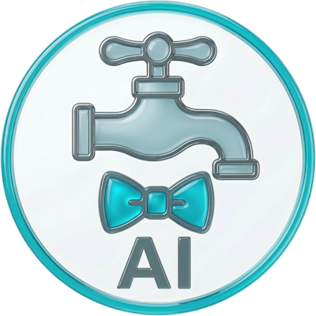

フォントの反映に時間がかかる場合があります
タップして画像を選択
縦長・背景透過の画像がおすすめです
{name}が自動で現在のキャラクター名に置き換わります
【重要】本アプリは非公式ツールであり、chichi-pui運営元とは一切関係ありません。
本アプリの不具合や使い方に関するお問い合わせを、公式運営元へ行うことはお控えください。
不具合の報告や機能のご要望などがございましたら、以下のリンクよりお気軽にご連絡ください。ただし、全ての問い合わせに対応できない場合や、返信が遅れる場合もございますので、あらかじめご了承ください。

AIみずまわりん
© 2026 AIみずまわりん. All Rights Reserved.
よろしいですか？
touch_app 右クリック長押しで画像を保存できます
データはJSON形式です。画像データなどを含むため、ファイルサイズが大きくなる場合があります。